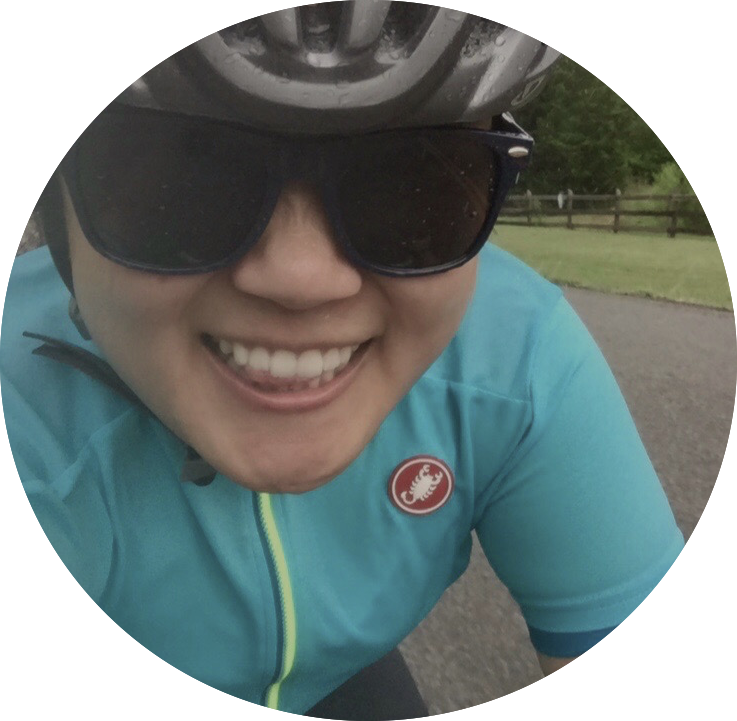

Hello!
I am an undergraduate junior pursuing a Bachelors (BA) in Computer Science & Statistical Data Sciences, class of 2019. The first time I coded, in 2015, was when I realized I love it. I learned that Computer Science is an art, every coder starts with a blank canvas and creates something so unique and personal to that person - having the freedom to create. And for Data Science, I was recently exposed to the subject, but learning how to data wrangle and gain insight on the subject matter is fascinating, from Melanoma Cancer to Hiking Trails. I see Computer Science & Statistical Data Science working harmoniously, allowing us to learn and better the future.
I aim to gain experience that will allow me to use my problem solving skills and my attention to detail to gain exposure to new methodologies to further develop my abilities in the field of Computer Science and/or Data Sciences. In addition, being able to collaborate, be constantly inspired, and learn from brilliant and diverse minds as well as think more critically and think outside of the box. I truly believe in order to become a better programmer and data scientist; I must get my hands dirty by taking in as much as I can.
When I am not coding, you will find me riding my bike around Northampton/NYC or taking photographs of the most purest moments. I am constantly trying to learn new things whether it would be about coding to new photography styles.